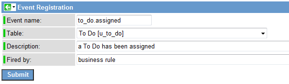
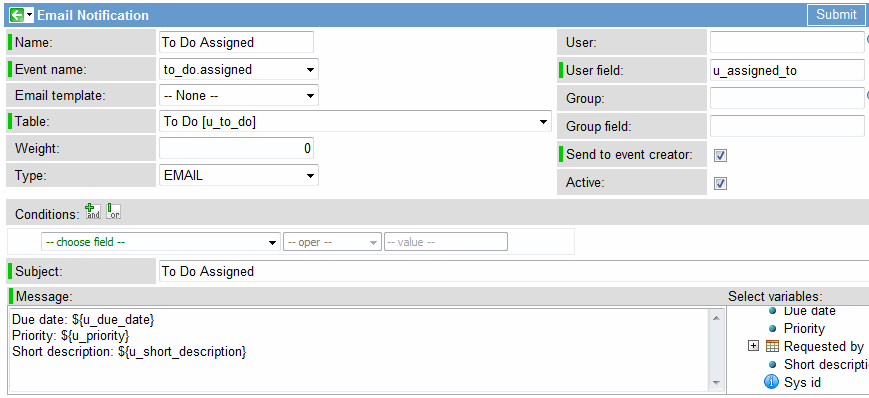
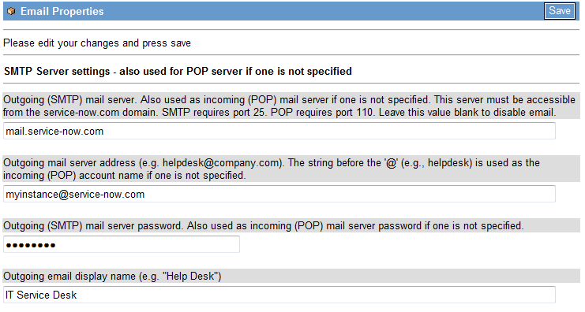
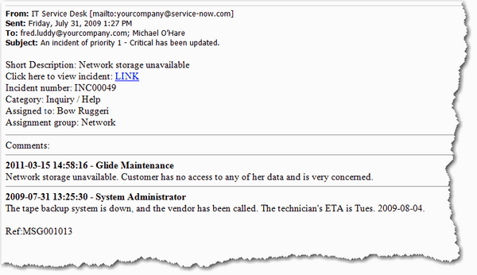

Notification Examples
| |
Note: This article applies to Fuji and earlier releases. For more current information, see Notification Examples at http://docs.servicenow.com
The ServiceNow Wiki is no longer being updated. Visit http://docs.servicenow.com for the latest product documentation. |
Contents
1 Overview
The following examples illustrate the process of composing email and SMS messages for ServiceNow notifications. The two processes are identical, with the exception of the length and content of the message. SMS messages do not permit user response to links and are limited to 140 characters. Use the SMS alternate field in the Email Template and Email Notification forms to create a brief text message for SMS devices.
The examples on this page are:
- Example 1: Simple Reminder
- Example 2: Approval Request Notification
- Example 3: Priority 1 Incident Update Notification
2 Example 1: Simple Reminder
In this example, we set up a very simple reminder that sends a user an email at a specified time, based on information in an incident.
We will create the following:
- A custom date/time field on the Incident form
- A business rule to define an event based on our new field
- An email notification to react to that event
2.1 Creating a Date/Time Field
Create a custom Date/Time field on the Incident form labeled Reminder, with a field name of u_reminder. For instructions on adding custom fields to a form, see Adding Fields.
2.2 Define a Scheduled Event
Now define an event that is triggered when the Reminder field gets a value. We create an event called incident.reminder that is triggered at a specific time. We use the gs.eventQueueScheduled() function, which is similar to the standard event creation function, but can pass a parameter to specify when the event is triggered. In this case, the event is triggered at the date and time specified in the new Reminder field.
| |
Note: Be sure to register your new event. If you do not, the system will not know to look for it. |
gs.eventQueueScheduled("incident.reminder", current, gs.getUserID(), gs.getUserName(), current.u_reminder);
2.3 Create a notification
Now create an email notification record that reacts to the new incident.reminder event. This brief notification message is suitable for SMS as well.
| |
Note: This is a very simple reminder. There is no condition in place to delete or reschedule the reminder event if the incident is deleted or if the date and time in the Reminder field is changed. The business rule, as presented, will schedule a new event every time the Reminder field is updated. Nothing is configured to display a reminder that is currently scheduled for an incident. However, this reminder is very simple and can be set up in just a few minutes. |
3 Example 2: Assignment Notification
In this exercise, we will enhance the To Do application to send an email notification when someone is assigned a task. The email notification is triggered by an event, which is triggered by a business rule. For information on creating notifications, see Notifications.
3.1 Register the Event
Events can be triggered by business rules and, in turn, reacted to elsewhere. This event will be triggered by the business rule we create in the next procedure and will, in turn, trigger the email notification.
- Navigate to System Policy > Event Registry.
- Click the New to create a new event registry record.</li>
- Select the To_Do table.
- Type A To Do has been assigned in the Description field.
- Fired by is basically a comment to remind you where the events come from. We select Business Rule.
- 
- Click Submit.
3.2 Create a Business Rule to Trigger the Event
This business rule creates a to_do.assigned event whenever the Assigned to party is inserted or updated.
- Navigate to 'System Definition > Business Rules.
- Click New to create a new business rule
- Fill in the fields as follows:
- Name: To Do Assigned
- Table: to_do
- Run at: server
- When: after
- Insert: true
- Update: true
- Enter a condition to trigger the business rule whenever the Assigned to field is changed or initially populated:
<font face="Courier"> current.u_assigned_to.changes() </font face="Courier">
- Enter a script to add a to_do.assigned event.
- In addition to the event name and the current record, specify two additional parameters (user’s ID and Name).
<font face="Courier"> gs.eventQueue("to_do.assigned", current, gs.getUserID(), gs.getUserName()); </font face="Courier">
- Click Submit.
- Test that the business rule is creating the event as follows:
- Change the value in the Assigned to field of an existing To Do record or create a new record and specify an Assigned to.
- Navigate to System Policy > Event Log and look for an event with the name to_do.assigned.
- To make this easier, you can sort the event log in descending order by created.
3.3 Create an Email Notification
Next, we will create a notification triggered by the event we just created.
- Navigate to System Policy > Email Notifications.
- Click New to create an email notification.
- Fill in the following fields:
- Name: To Do Assigned
- Event name: to_do.assigned
- Table name: to_do
- The User field specifies to whom the email should be sent. In this case, we will send it to the Assigned to user.
- In User field, enter u_assigned_to.
- Sometimes, you do not want notifications to be sent to the person who triggered the notification. In this case, clear the Send to event creator check box. For our purposes, we will check this box and see all the notifications whether we triggered them ourselves or not.
- Enter the Subject of the email as To Do Assigned.
- Under Select variables, click Due Date.
- You will see text added to the message text box which causes the value of the due date to be inserted. You can change the label (Due Date in this case) which was provided automatically. Use the same method to add two more variables to the message text: Priority and Short Description.
- 
- Click Submit.
3.4 Test the Email Notification
If you are working on your own Glide instance, you must configure Glide to use a mail server.

Warning: Do not use your own POP server for this exercise. You should have a test account set up on your mail server (see the administrator of your mail system). It may download the contents of your POP account. You may choose to skip configuring Glide to use an email server and just check the Glide email log instead of sending an actual email (see final step below).
- Navigate to System Properties > Email.
- Under SMTP Server Settings, enter the outgoing mail server, outgoing mail address, the mail server password, and outgoing mail display name.
- If you are using a POP server, enter the POP server, incoming POP mail account name (do not include the @ and server name here), and incoming POP mail account password.
- At the bottom of the form is a space where a test email account can be provided to direct emails to it instead of the actual email addresses. Rather than test emails sent to the test users, place your own email address here.
- 
- Click Save.
- Test the assignment notifications.
- a. Assign some To Do records.
- b. Navigate to System Logs > Email to see that status of generated emails.
- If you managed to configure your mail settings correctly, you should receive email notifications in a few moments.
4 Example 3: Approval Request Notification
In this notification, a change request approval is requested, which results in an update to the Approval [sysapproval_approval] table. The approval events Business Rule is executed which creates the approval.inserted event. The Approval Request email event is configured to process the approval.inserted event, which uses the change.itil.approve.role email template. This is part of an automatic response that enables the recipient to click a link in the email to send a pre-formatted response back to the system to either approve or reject the change request automatically.
The base email notification looks like this:
The change.itil.approve.role template called from the notification looks like this:

The combination of the notification and template generates an email that looks something like the following:
Notice that the receiver of this email has the following links in the mail:
- A link to view the approval record
- A link to view all the details of the change request
- A link that will generate an automatic email response to approve the change
- A link that will generate an automatic email response to reject the change
5 Example 4: Priority 1 Incident Update Notification
In this example, we will configure ServiceNow to notify specific users by email whenever an incident with a priority of 1 - Critical is updated, regardless of the changes that have been made. We will create an email notification to alert all recipients when the default system event incident.update is triggered for a priority 1 incident. The notification will display information of interest to the recipients, such as the incident number, category, assignees, and any comments that were added to the incident.
Open and configure a new email notification record:
- Navigate to System Policy > Email > Notifications, and then click New.
- Configure the email notification record as follows.
Field Input Value Name Give your notification record a unique name, such as Incident of Priority 1 Updated. User Click the magnifying glass icon and select a recipient from the list of ServiceNow users. You can select only one user in this field. Event name Select the event to use for this notification. The incident.updated event is triggered by any change to an incident record and can be used to send our notification. User field Enter the field name from the Incident table that defines the recipient for this notification. For example, you might send notification of an update to the person who opened the incident by typing opened_by. Email template Leave this field blank. We will cover the construction and use of templates in another exercise. Group Click the magnifying glass icon, and then select a group from the list of ServiceNow groups. You can select only one group in this field. Table Select the appropriate database table, in this case Incident [incident]. Group field Enter the field name from the Incident table that defines the group to notify. For example, you might send notification of the update to the designated assignment group by typing assignment_group. Weight Weight determines the sending priority of each notification when more than one qualifies. This is an arbitrary scale that you set. Send to event creator Select this check box to send the notification to the person who performed the action that started the notification process if the person is also specified in the Users/groups in fields, Users, or Groups field. If the event creator is not specified in one of these fields, the event creator does not receive a notification regardless of the setting in this field. Type Select EMAIL. Active Select the check box (true) to enable email notification. Conditions Updated --> is anything. This creates the condition under which the notification is sent. In our example, an update to any field in an incident record sends an email to all recipients. Subject Type an appropriate subject line for your email. Select variables for your content from fields in the Incident table. Put the cursor in the subject line where you want the variable to appear, and then click the field name in the Select variables column. For this exercise, type the following subject line and insert the variable for the Priority field: An Incident of Priority ${priority} has been updated.
In this notification, the variable ${priority} returns the value 1 – Critical.
Message Construct a message that includes all the information you think the recipients need to know about the updated incident. Select the appropriate variables for your message from the fields in the Incident table. Put the cursor in the message where you want the variable to appear, and then click the field name in the Select variables column. The special character, <hr/>, creates a manual break in the message that sets off the Comments section. For this example, we create the following message: Short Description: ${short_description} Click here to view incident: ${URI} Incident number: ${number} Category: ${category} Assigned to: ${assigned_to} Assignment group: ${assignment_group} <hr/> Comments: ${comments}List Click the lock icon to open a list of recipients for the email notification. Click the magnifying glass icon and select names from the list of ServiceNow users. You can select as many users from the list as you want. List field Enter the field name from the Incident table that identifies a list that contains potential recipients. For example, to send the notification to users who are on the watch list for this issue, type watch_list. SMS alternate Enter an abbreviated version of the email message that eliminates such things as the ${URI} link that requires recipient interaction and the ${comments} field. SMS messages can only display 140 characters.
Your email notification record should look like this:
5.1 Test Your Email Notification
After you have created the email notification record, set up a test in your environment to make sure the intended recipients get the proper notification.
- Create users in your ServiceNow platform who have email addresses you can monitor, and then create a group that includes one of these users.
- Open a Priority 1 – Critical incident, and assign it to one of the users you created. Then select the group you created as the assignment group.
- Open your email notification record and specify the recipients.
- a. Select one of the users you created from the lookup list in the User field.
- b. Type assigned_to for the User field value.
- c. Type assignment_group for the Group field value.
- Update your Priority 1 incident by adding comments, and then click Update.
- Check the email accounts of the user to whom you assigned the incident and the user member of the assignment group.
The email that is sent should have the same structure as the following sample:


{kind=link}
{kind=link}
{kind=link}
{kind=link}
{kind=link}
{kind=link}
{kind=link}
{kind=link}
{kind=link}
{kind=link}
{kind=link}
Contents > Administer > Service Administration > Notification Administration
Contents > Integrate > Email Integrations